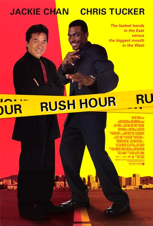

The starting puzzle: output and ratings
FILTEREDSeparate panels keep production counts and mean scores on their own scales. The 2020s are incomplete.
产量柱图与评分线分别读：723与195是已收录数量；评分从5.66回升到6.01，不能直接说产业复苏。
Filters update production, genre, reception and the film table. Other evidence remains fixed; the network is a historical overview.
A study of Hong Kong cinema, 1950–2026.
Genres. Collaboration. Audience response.




The 1990s contain 723 films; the incomplete 2020s contain 195 so far. Yet mean ratings recover from 5.66 in the 2010s to 6.01 in the 2020s. What is different about the films that remain?
Venues form a visual collage, not a claim that these films premiered there. Rush Hour is a US production used to illustrate star crossover. 2026 award source: HKFAA · Image credits & sources
Output and ratings take different paths. We first ask whether the kinds of films being made have changed.
Separate panels keep production counts and mean scores on their own scales. The 2020s are incomplete.
Share of genre tags, not share of films. Films may carry several tags; the eight displayed genres need not sum to 100%.
Plot vocabulary per 1,000 words · 158 usable Wikipedia plot sections, sampled from highly voted films.
The collaboration network becomes smaller and more fragmented across decades.
Original Demo projection · node size indicates distinct co-stars; colour indicates community. Hover to inspect a performer. This node overview does not display edges.
Performer counts and network modularity by decade. Greater modularity indicates clearer separation between communities. Labels above the plot show the share of performers in the largest connected group. A dash indicates that the project report did not provide a value for that decade.
High ratings do not always mean high attention or strong box-office performance.
IMDb votes are a proxy for online attention, not cinema admissions. Dashed lines mark the current slice's medians.
637 matched charting films · 2001–2026 · r = 0.211 in the report. Percentile measures rank within a year's chart, not revenue in dollars.
Historical Best Film winners end in 2025 · median rating percentile ≈ 94. The report also finds a median gross percentile of 91 for charting winners, versus 50 for other charting films. These are associations, not award effects.
Hong Kong cinema’s changing genres, collaboration structure and market reception deserve to be read together.
Action's share fell; Drama remained important.
The actor network became more fragmented.
Ratings, attention and box office do not always align.
A recovery in ratings does not establish industrial recovery. Falling production alone does not explain everything that changed.
Use the charts and film table below to inspect the broader pattern and the data behind it.
Original Demo series indexed to the 1990s = 100. IMDb vote totals are cumulative attention, not audience counts at release.
Field coverage by decade. Missing information and small vote counts limit what the other charts can establish.
| Film | Year | Genres | Rating | IMDb votes |
|---|
Built from the local web Demo, retaining its four main charts, six evidence charts and sortable film table. Source data: Wikidata country-of-origin records, IMDb, Hong Kong Film Awards and Box Office Mojo.
Genre shares use all tags as the denominator, not releases. Evidence panels and the network overview are fixed. Co-appearance does not establish production control; association does not establish causation. The presentation follows the output–rating puzzle and three findings: genre change, collaboration change and the distinction between ratings, attention and box office.